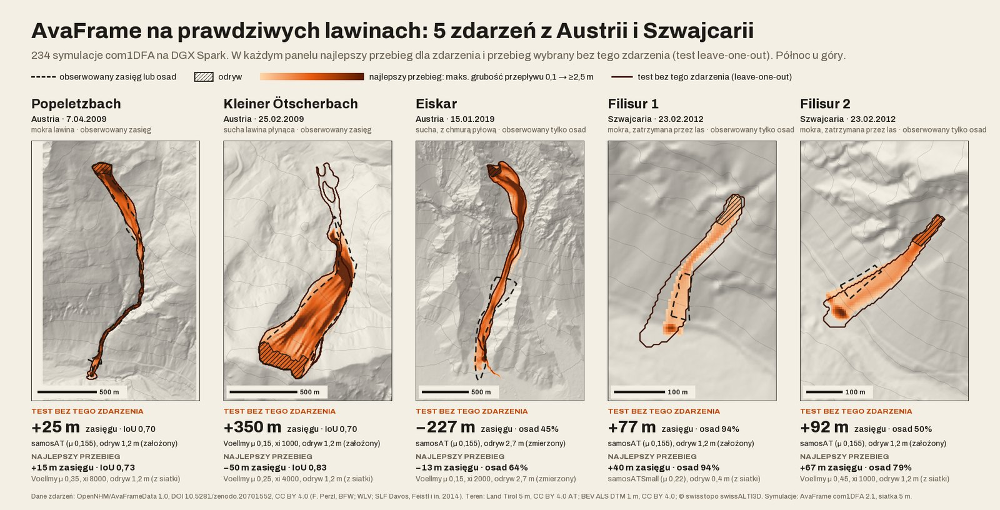

Prototyp cyfrowego bliźniaka góry, który wie, czego nie wie, i mówi, gdzie polecieć, żeby się dowiedzieć.
Drony regularnie mierzą śnieg nad szlakami, a Avalauncher porównuje każdy pomiar z tysiącami scenariuszy lawin, których uczy się sieć neuronowa, i wskazuje służbie lawinowej stoki, które mogą zagrozić szlakom. Gdy wiedza się starzeje, bo dron nie mógł polecieć, mówi to wprost i planuje, gdzie polecieć, żeby się dowiedzieć.
W jedną noc policzyliśmy fizyką 1566 lawin. Sieć neuronowa uczy się ich i rysuje zasięg ok. 4500× szybciej, a planer lotu drona przećwiczył 10,4 mln symulowanych poranków (RL). Docelowo scenariuszy będą tysiące.
Demo działa w przeglądarce, także bez sieci. Teren: GUGiK NMT. Pogoda: IMGW-PIB (prawdziwa). Grubość płyty i przeloty: syntetyczne.

może zagrozić szlakowinie wiemplan przelotu
Jak to działa
Trzy kroki, które dyżurny służby lawinowej widzi rano na jednym ekranie. Scenariusze są policzone z góry, więc odpowiedź jest natychmiastowa i nie potrzebuje sieci.
-
1
Dron mierzy śnieg nad szlakami
Regularne przeloty nad szlakiem i strefami startowymi nad nim. Każdy przelot to świeży pomiar śniegu w sektorach, nad którymi dron przeleciał.
-
2
Porównanie z biblioteką scenariuszy
Pomiar z każdej strefy startowej jest porównywany ze scenariuszami policzonymi z góry fizycznym solverem AvaFrame. Jeśli podobne lawiny dochodzą do szlaku, stok dostaje flagę. Jeśli pomiar się zestarzał, sektor dostaje „nie wiem” zamiast zniknąć z listy.
Może zagrozić szlakowi Nie wiem -
3
Plan przelotu
Na dostępny czas lotu Avalauncher układa trasę przez sektory, w których pomiar najbardziej zmniejszy niepewność decyzji. Gdy dron nie może polecieć, mówi to wprost i trzyma plan na pierwsze okno pogodowe.
Pętla. Plan przelotu wraca do kroku 1: następny przelot mierzy tam, gdzie wiedza zestarzała się najbardziej, i mgła niewiedzy znika z mapy.
Wyniki tej nocy
Pomiary z nocy 3/4.10.2026. Każda liczba ma plik, z którego pochodzi, i zastrzeżenie, które ją ogranicza.
-
1566lawin policzonych w jedną noc (30,4 min); docelowo tysiące
Biblioteka scenariuszy policzona fizycznym solverem AvaFrame com1DFA na prawdziwym terenie GUGiK, na 12 rdzeniach DGX Spark: 58 stref startowych × 9 grubości płyty (0,4–2,0 m) × 3 kalibracje tarcia, 0 nieudanych przebiegów. 48 z 58 stref dochodzi do szlaku. Na tych przebiegach uczy się sieć neuronowa (niżej), dzięki której biblioteka może rosnąć do tysięcy scenariuszy.
Zastrzeżenie: standardowe kalibracje tarcia z AvaFrame, bez kalibracji dla Tatr. Strefy startowe wyznaczone z terenu regułą nachylenia i wysokości, bez inwentarza służby.
Źródło: data/scenarios.json
-
92 mmediana błędu zasięgu na 5 prawdziwych lawinach, test bez podglądania
Na 5 prawdziwych lawinach z Austrii i Szwajcarii (OpenNHM/AvaFrameData, 234 symulacje AvaFrame), test bez podglądania: mediana błędu zasięgu 92 m, średnio 154 m, najgorzej +350 m; Popeletzbach +25 m, IoU 0,70. Ustawienie tarcia wybieramy na czterech lawinach i sprawdzamy na piątej, po kolei na każdej.
Zastrzeżenie: grubość odrywu zmierzono tylko na jednej lawinie (Eiskar, 2,7 m); na pozostałych przyjęto 1,2 m. Model bez lasu i bez porywania śniegu. Podejrzewamy, że stąd część błędu, ale wariant z lasem i porywaniem z danych zdarzeń (parametry domyślne, niestrojone) go nie zmniejszył: średnio 153,7 m, mediana 124 m. Dopasowanie na tym samym zdarzeniu (Popeletzbach, 21 przebiegów, w próbie, nie walidacja): IoU 0,727, +20 m. To przykładowa kalibracja na zdarzeniach z Austrii i Szwajcarii; dla Tatr potrzebne są lokalne obserwacje.
Źródło: data/calibration.json · dane zdarzeń OpenNHM/AvaFrameData, DOI 10.5281/zenodo.20701552
-
IoU 0,805surogat: 2,3 ms zamiast 10,43 s
Sieć zastępcza U-Net, uczona na 1215 przebiegach AvaFrame z biblioteki, przewiduje zasięg lawiny na 3 stokach, których nie widziała (81 przebiegów), ok. 4500× szybciej niż AvaFrame. Trening: 11 min na GPU DGX Spark.
Zastrzeżenie: dowód koncepcji. Surogat przybliża mapę maksymalnej grubości przepływu, nie zastępuje AvaFrame. Czasy z różnego sprzętu: 2,3 ms na mapę na GPU GB10, 10,43 s na symulację na 1 rdzeniu CPU (mediana).
Źródło: data/surrogate.json
-
86 wobec 71wyjaśnionych sektorów „nie wiem”: plan przelotu wobec patrolu
Przy tym samym czasie lotu 20 min plan Avalaunchera wyjaśnia więcej niewiadomych niż patrol wzdłuż szlaku. Zagrażające stoki oflagowane po przelocie: 29 wobec 16. Spadek niepewności decyzji: −23% wobec −7%.
Zastrzeżenie: pogoda prawdziwa (IMGW-PIB Kasprowy Wierch, 23.12.2024–21.01.2025, kierunek wiatru założony), ale grubość płyty, prawda i przeloty są syntetyczne. To test logiki, nie walidacja na prawdziwych lawinach.
Źródło: data/proof.json
-
0 wobec 121przeoczeń w teście logiki: Avalauncher wobec reguły „nowy śnieg z 3 dni ≥ 30 cm”
W teście logiki na 30 porankach z prawdziwą pogodą IMGW i syntetycznym stanem stoków silnik nie przeoczył żadnego syntetycznie groźnego stoku i nie dał fałszywego alarmu „zagrożenie” (0 wobec 25 dla reguły).
Zastrzeżenie: ceną jest 549 flag „nie wiem”, z czego 505 w poranki z odwołanym przelotem. Błąd modelu zmienia prawdę tylko w 44 przypadkach, więc 0/0 to słaby dowód. Grubość płyty, prawda i przeloty są syntetyczne: to test logiki.
Źródło: data/proof.json
-
19,9% RL
20,2% plan VOIspadku niepewności decyzji: RL dorównuje planowi według wartości informacji, ale go nie pokonujePolityka RL (REINFORCE, 10,4 mln epizodów w 6 min na GPU DGX Spark) na 1000 porankach spoza treningu wypada jak prosty plan według wartości informacji. Zgodnie z planem walidacji zostajemy przy prostszym planerze.
Zastrzeżenie: prawda losowana z przekonania silnika. To uczciwy test trasowania, ale nie świat z błędem modelu, więc liczby nie są wprost porównywalne z 86 wobec 71.
Źródło: data/rl.json


Filmy z symulacji
Krótkie filmy bez dźwięku. Lawiny policzył AvaFrame na terenie GUGiK NMT. Śnieg na ortofotomapie jest syntetyczny.
Prawdziwe a symulowane
Mówimy wprost, co pochodzi z prawdziwych źródeł, co policzyliśmy, a co wygenerowaliśmy.
| Element | Stan | Szczegóły |
|---|---|---|
| Teren | prawdziwy | GUGiK NMT, wycinek: Hala Gąsienicowa, Kasprowy Wierch, Kościelec, Świnica, Zawrat |
| Szlaki | prawdziwe | OpenStreetMap, w ich prawdziwych kolorach |
| Pogoda | prawdziwa | IMGW-PIB Kasprowy Wierch, zima 2024/25 (dobowe archiwum). Poranki demo 12 i 13.01.2025 leżą w prawdziwym epizodzie: +34 cm nowego śniegu w 3 dni, 72 h zamieci w dobach 11–13.01, pokrywa 51 → 85 cm. Kierunek wiatru założony, bo brak go w archiwum |
| Satelita | prawdziwy | Copernicus Sentinel-2 L2A (Element84 Earth Search, AWS Open Data): pokrywa śnieżna 16.01.2025; w dniach zamieci chmury albo brak przelotu |
| Biblioteka scenariuszy | policzona | Fizyczny solver AvaFrame com1DFA na prawdziwym terenie, standardowe kalibracje tarcia, bez kalibracji dla Tatr |
| Kalibracja | prawdziwe zdarzenie | Przykładowa: 5 prawdziwych lawin z Austrii i Szwajcarii (OpenNHM/AvaFrameData), test bez podglądania; nie dla Tatr |
| Strefy startowe | wyznaczone | Z prawdziwego terenu prostą regułą nachylenia i wysokości, bez inwentarza służby |
| Grubość płyty, przeloty i odczyty drona | syntetyczne | Wygenerowane naszymi skryptami |
| 30 poranków dowodu | mieszane | Prawdziwa pogoda, syntetyczny stan stoków i błąd modelu |
| Śnieg w filmach 3D | syntetyczny | Nałożony na prawdziwą ortofotomapę GUGiK |
Czym Avalauncher nie jest. Nie jest zwalidowaną prognozą zagrożenia i nie służy do samodzielnego ostrzegania. Brak flagi nie oznacza braku zagrożenia. Stopień zagrożenia i zamknięcia szlaków ustala prognosta, a Avalauncher wskazuje mu, gdzie patrzeć.
Dane i licencje
Wszystkie zasoby zewnętrzne zachowują własne licencje. Nasz kod jest na licencji MIT.
| Zasób | Do czego | Licencja |
|---|---|---|
| GUGiK, Numeryczny Model Terenu | Teren, nachylenie, strefy startowe, wejście dla AvaFrame | bez opłat, z podaniem źródła |
| GUGiK, ortofotomapa | Tekstura terenu w filmach 3D | bez opłat, z podaniem źródła |
| OpenStreetMap | Szlaki turystyczne z nazwami i kolorami | ODbL 1.0 |
| IMGW-PIB, dane publiczne | Pogoda poranków demo i dowodu, stacja Kasprowy Wierch | z podaniem źródła i informacją o przetworzeniu |
| OpenNHM / AvaFrameData 1.0: 5 zdarzeń (Popeletzbach, Kleiner Ötscherbach, Eiskar, Filisur 1 i 2; dane F. Perzl, BFW; WLV; SLF Davos) | Kalibracja i test bez podglądania AvaFrame na prawdziwych lawinach | CC BY 4.0 |
| Land Tirol, model terenu 5 m | Teren dla symulacji Popeletzbach | CC BY 4.0 AT |
| BEV, ALS DTM 1 m (Austria) | Teren dla symulacji Kleiner Ötscherbach i Eiskar | CC BY 4.0 |
| swisstopo, swissALTI3D 2 m | Teren dla symulacji Filisur 1 i 2 | © swisstopo, z podaniem źródła (warunki licencji potwierdzamy) |
| Copernicus Sentinel-2 L2A (Element84 Earth Search, AWS Open Data) | Pokrywa śnieżna 16.01.2025, chmury w dniach zamieci | Zawiera zmodyfikowane dane Copernicus Sentinel (2025) |
| AvaFrame 2.1, moduł com1DFA | Symulacje lawin, biblioteka scenariuszy, dane do uczenia surogatu | EUPL-1.2 |
| Archivo (Omnibus-Type) | Czcionka | SIL OFL 1.1 |
| Kod Avalaunchera | Silnik, ekran demo, skrypty | MIT |
Użycie AI. Kod, teksty i wizualizacje powstały z dużym udziałem Claude Code (model Claude Opus 5.5). Problem, zakres, tezę, scenariusz demo i świat wizualny wybrali ludzie. Za treść zgłoszenia odpowiada zespół.
Pełna lista: docs/10